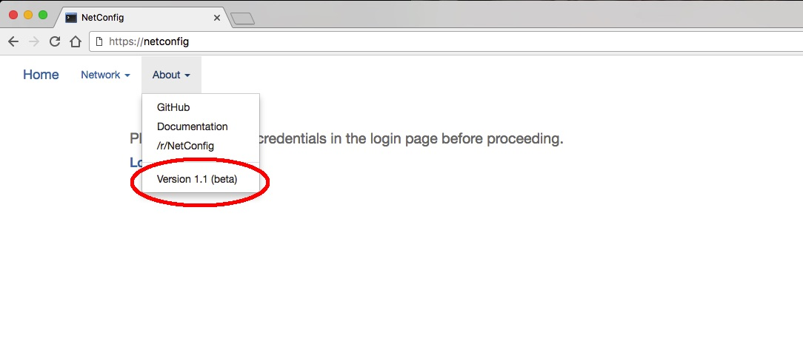

Upgrading¶
Upgrading NetConfig to Latest Version¶
Before Starting¶
If running NetConfig on a VM, it is highly recommended to take a snapshot prior to upgrading. In case of any issues, you can roll back any changes by reverting to the previous snapshot.
Upgrade Process¶
Version 1.3.0 (beta) or newer¶
As of Version 1.3.0 (beta), the Upgrade process has been fully automated into the ~/netconfig/upgrade.sh script.
If you are on v1.3.0 (beta) or higher, simply run the following commands to run the script as the local ‘netconfig’ user:
su - netconfig
/home/netconfig/netconfig/upgrade.sh
Version 1.2.3 (beta) or earlier¶
Change to NetConfig user
su - netconfig
Change to NetConfig directory
cd /home/netconfig/netconfig
Checkout master branch
git checkout master
Pull new files
git pull origin master
Verify git status
git status
Run Upgrade script. If upgrade script is not executable, run the ‘chmod’ command below first
chmod +x upgrade.sh
./upgrade.sh
Restart NetConfig service
sudo supervisorctl restart netconfig
Verifying Upgrade¶
In your web browser, navigate to the home NetConfig page. In the Top Menu, under About, you should see the latest software version displayed.
Potential Caveats¶
If any manual changes are made to any NetConfig files (except for the settings and log files), the command ‘git pull origin master’ may fail or throw an error. If so, you can stash (delete) any manual changes made, then repull from NetConfig’s GitHub respository. This will replace any custom changes made in files with the standard NetConfig system files, so be careful if any custom changes are critical to your environment.
The command is:
Upgrade Script doesn’t run:¶
If the upgrade script doesn’t run, make sure it is executable first.
ls -lah
# -rw-r--r-- 1 netconfig staff 1.2K Jan 2 14:30 upgrade.sh
If it is missing an ‘x’ in the above output, run this command:
chmod +x upgrade.sh
The ‘ls -lah’ output should now read as follows:
ls -lah
# -rwxr-xr-x 1 netconfig staff 1.2K Jan 2 14:30 upgrade.sh